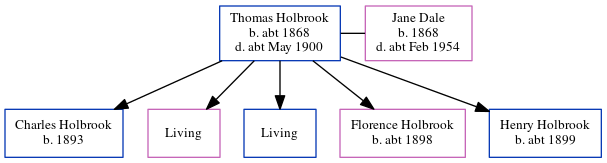

Thomas Holbrook c1868 - c1900
[ Home ] | [ Calendar ] | [ Surnames Index ] | [ Census Index ] | [ Family History ]Thomas Holbrook, the husband of Jane Elizabeth Dale (the first cousin three-times-removed on the father's side of Nigel Horne), was born c. 18681 and married Jane (with whom he had 5 children: Charles, Louisa Jane, Steven George, Florence Mildred and Henry T, along with 2 surviving children) in Canterbury, Kent, England around Feb 18932, which is also where he died c. May 19001.
Children
- Charles was born in 1893
- Florence Mildred was born c. 1898
- Henry T was born c. 1899
Citations
- England & Wales deaths 1837-2007 - Findmypast
- England & Wales Marriages 1837-2005 - Findmypast
Media
England & Wales marriages 1837-2005 - BMD/M/1893/1/AZ/000111/283
England & Wales deaths 1837-2007 - BMD/D/1900/2/AZ/000179/281
Family Tree
Generated by ged2site. Last updated on Jun 11, 2024